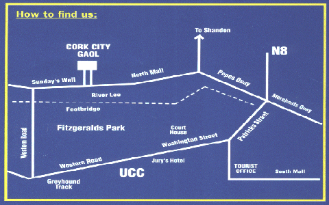

| Home | What To Do | University College Cork | Cork City Gaol | Cork City Hall | Fota Wildlife Park |
CORK CITY GAOL

Located 2km from Cork's main thoroughfare, this castle like prison once housed 19th C. prisoners, often in wretched conditions. Wandering through the wings of Cork City Gaol, the atmosphere suggests you are accompanied by the shuffling feet of inmates, each representing their particular period in Irish history from pre-famine times to the foundation of the State.

Cells furnished with life-size figures, sound effects and fascinating exhibitions together with a spectacular sound and image presentation tell the social history and contrasting lifestyles of 19th Century Cork and why some people turned to crime. The Gaol experience includes individual sound tour English/ French/ German/ Italian/ Irish & Spanish). Personal guided tours arranged on prior request.
Souvenir & refreshment areas, friendly staff and good facilities combine with this unique interpretation to offer the individual, group or family visitors a memorable experience.
